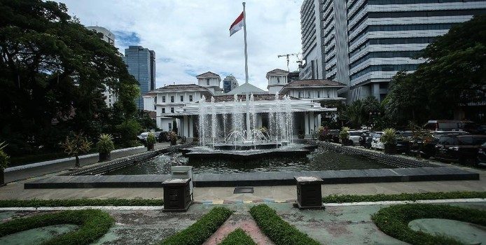
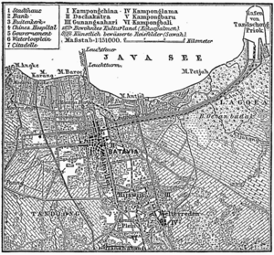
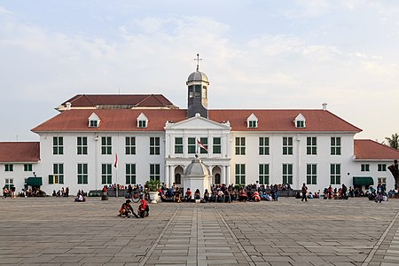
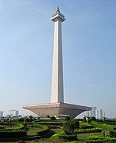

Perkenalan

Jakarta atau secara resmi bernama Daerah Khusus Ibukota Jakarta (disingkat DKI Jakarta) atau Jakarta Raya adalah ibu kota negara dan kota terbesar di Indonesia. Jakarta merupakan satu-satunya kota di Indonesia yang memiliki status setingkat provinsi. Jakarta terletak di pesisir bagian barat laut Pulau Jawa. Dahulu pernah dikenal dengan beberapa nama di antaranya Sunda Kelapa, Jayakarta, dan Batavia. Jakarta juga mempunyai julukan The Big Durian karena dianggap kota yang sebanding New York City (Big Apple) di Indonesia.
Sebagai pusat bisnis, politik, dan kebudayaan, Jakarta merupakan tempat berdirinya kantor-kantor pusat BUMN, perusahaan swasta, dan perusahaan asing. Kota ini juga menjadi tempat kedudukan lembaga-lembaga pemerintahan dan kantor sekretariat ASEAN. Jakarta dilayani oleh dua bandar udara, yakni Bandara Soekarno–Hatta dan Bandara Halim Perdanakusuma, serta tiga pelabuhan laut di Tanjung Priok, Sunda Kelapa, dan Ancol.
Sejarah

Nama Jakarta sudah beberapa kali berganti nama.
- Sunda Kelapa (397-1527)
- Jayakarta (1527-1619)
- Batavia (1619-1942)
- Jakarta (1942-sekarang)
- DKI Jakarta (1998-sekarang)
Jakarta pertama kali dikenal sebagai salah satu pelabuhan Kerajaan Sunda yang bernama Sunda Kalapa, berlokasi di muara Sungai Ciliwung. Ibu kota Kerajaan Sunda yang dikenal sebagai Dayeuh Pakuan Padjadjaran atau Pajajaran (sekarang Bogor) dapat ditempuh dari pelabuhan Sunda Kalapa selama dua hari perjalanan. Menurut sumber Portugis, Sunda Kalapa merupakan salah satu pelabuhan yang dimiliki Kerajaan Sunda selain pelabuhan Banten, Pontang, Cigede, Tamgara dan Cimanuk. Sunda Kalapa yang dalam teks ini disebut Kalapa dianggap pelabuhan yang terpenting karena dapat ditempuh dari ibu kota kerajaan yang disebut dengan nama Dayo (dalam bahasa Sunda modern: dayeuh yang berarti "ibu kota") dalam tempo dua hari.
Jakarta digunakan sejak masa pendudukan Jepang tahun 1942 tak lain untuk menarik simpati penduduk pada Jepang dan menggantikan nama yang diresmikan oleh pemerintah Hindia Belanda pada tahun 1905 yaitu batavia. Nama "Jakarta" merupakan kependekan dari kata Jayakarta berasal dari dua kata Sanskerta yaitu Jaya (जय) yang berarti "kemenangan" dan Karta (कृत) yang berarti "dicapai".
Landmark
Jakarta atau batavia pada masa kolonial dikenal memiliki beberapa landmark peninggalan Belanda karena pernah menjadi ibu kota Hindia Belanda
Museum Fatahillah

Museum Fatahillah memiliki nama resmi Museum Sejarah Jakarta adalah sebuah museum yang terletak di Jalan Taman Fatahillah Nomor 1, Jakarta Barat, dengan luas lebih dari 1.300 meter persegi.
Bangunan ini dahulu merupakan Balai Kota Batavia (bahasa Belanda: Stadhuis van Batavia) yang dibangun pada tahun 1707-1710 atas perintah Gubernur Jenderal Joan van Hoorn. Bangunan ini menyerupai Istana Dam di Amsterdam, terdiri atas bangunan utama dengan dua sayap di bagian timur dan barat serta bangunan sanding yang digunakan sebagai kantor, ruang pengadilan, dan ruang-ruang bawah tanah yang dipakai sebagai penjara. Pada tanggal 30 Maret 1974, bangunan ini kemudian diresmikan oleh bapak Ali Sadikin sebagai Museum Sejarah Jakarta.
Selama dua abad, balai kota Batavia ini digunakan sebagai kantor administrasi kota Batavia. Selain itu juga digunakan sebagai tempat College van Schepenen (Dewan Kotapraja) dan Raad van Justitie (Dewan Pengadilan). Awalnya sidang Dewan Pengadilan dilakukan di dalam Kastil Batavia. Namun dipindahkan ke sayap timur balai kota dan kemudian dipindahkan ke gedung pengadilan yang baru pada tahun 1870.
Monumen Nasional

Monumen Nasional atau yang disingkat dengan Monas atau Tugu Monas adalah monumen peringatan setinggi 132 meter (433 kaki) yang didirikan untuk mengenang perlawanan dan perjuangan rakyat Indonesia untuk merebut kemerdekaan dari pemerintahan kolonial Hindia Belanda. Tugu ini dimahkotai lidah api yang dilapisi lembaran emas yang melambangkan semangat perjuangan yang menyala-nyala dari rakyat Indonesia. Monumen Nasional terletak tepat di tengah Lapangan Medan Merdeka, Jakarta Pusat.
Pembangunan terdiri atas tiga tahap. Tahap pertama, kurun 1961/1962 - 1964/1965 dimulai dengan dimulainya secara resmi pembangunan pada tanggal 17 Agustus 1961 dengan Soekarno secara seremonial menancapkan pasak beton pertama. Keseluruhan pemancangan fondasi rampung pada bulan Maret 1962. Dinding museum di dasar bangunan selesai pada bulan Oktober. Pembangunan obelisk kemudian dimulai dan akhirnya rampung pada bulan Agustus 1963. Pembangunan tahap kedua berlangsung pada kurun 1966 hingga 1968 akibat terjadinya Gerakan 30 September sehingga tahap ini sempat tertunda. Tahap akhir berlangsung pada tahun 1969-1976 dengan menambahkan diorama pada museum sejarah.